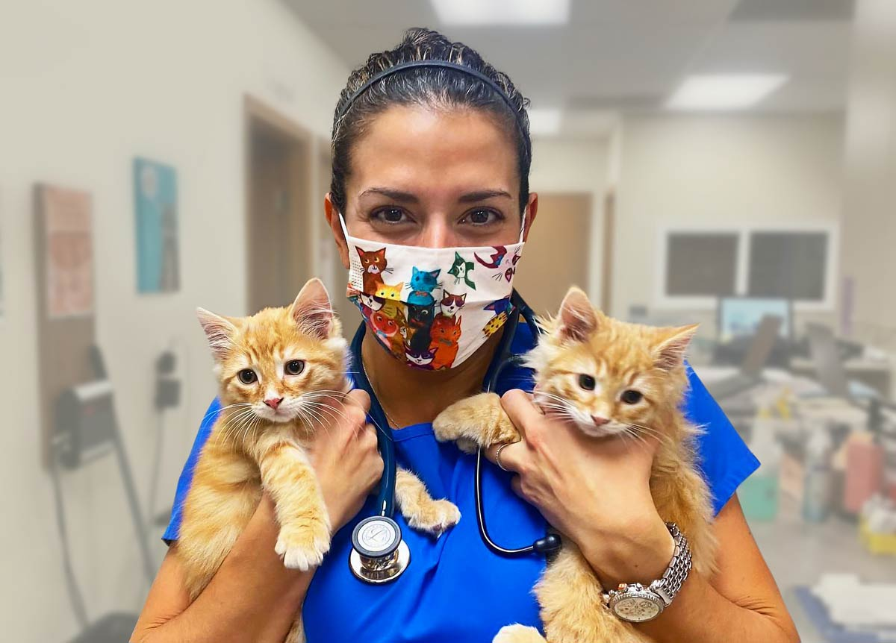
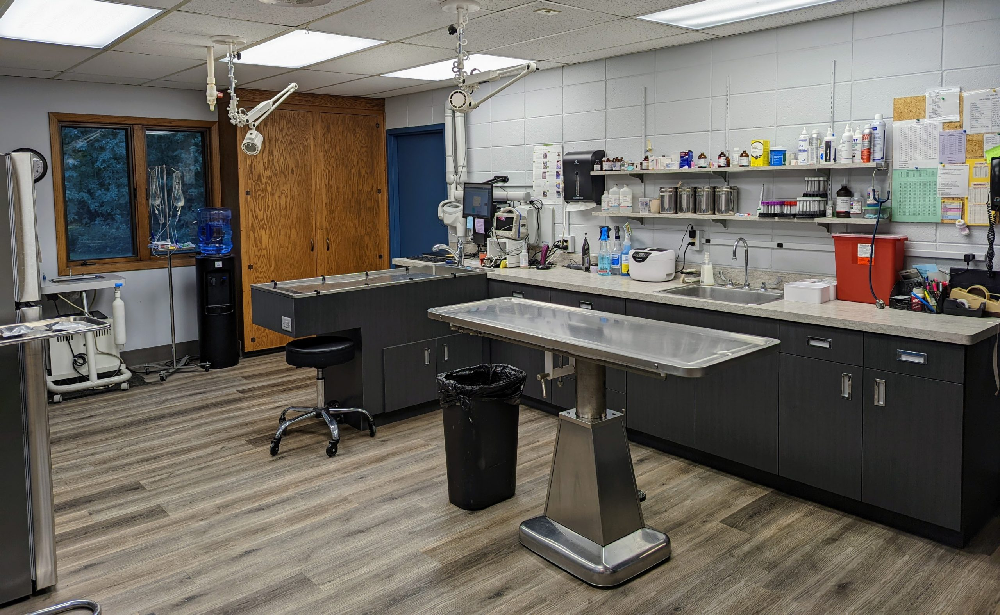
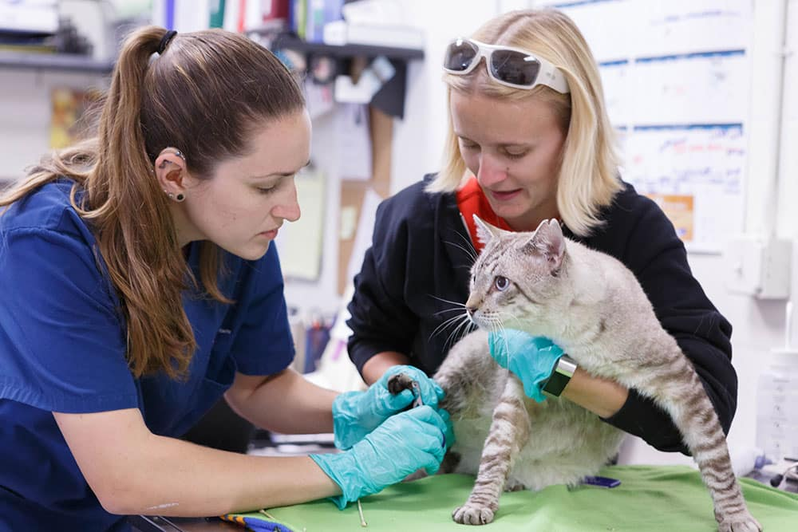

VetLab
Somos una veterinaria integral con laboratorio propio que se distingue por su enfoque especializado y responsable en la atención de perros, gatos, conejos, hámsters y Aves, entendiendo que cada una de estas especies requiere cuidados, manejos y conocimientos específicos.
El centro está pensado para brindar un ambiente seguro, tranquilo y adaptado, donde las mascotas reciban un trato respetuoso y profesional, y sus tutores puedan sentirse acompañados y bien informados en cada etapa del cuidado de la salud animal.
El equipo veterinario trabaja con una visión preventiva y clínica, priorizando la detección temprana de enfermedades, el seguimiento personalizado y la educación de los dueños para promover una mejor calidad de vida.

nuestras instalaciones
Nuestra veterinaria se posiciona como una de las más modernas del país, destacándose por su infraestructura actualizada, tecnología de última generación y un enfoque profesional orientado a la excelencia. Cada espacio, equipo y servicio está pensado para ofrecer una atención segura, eficiente y de alta calidad, adaptada a las necesidades actuales de las mascotas y sus tutores.
Además, nos encontramos en constante evolución y mejora continua, incorporando nuevos equipamientos, actualizando procesos y capacitándonos de forma permanente para seguir creciendo. Este compromiso con la innovación nos permite optimizar diagnósticos, tratamientos y experiencias de atención, garantizando un servicio moderno, confiable y alineado con los más altos estándares de la medicina veterinaria.

Nuestro personal
En VetLab contamos con un equipo de profesionales altamente capacitados y en constante formación, comprometidos con la salud y el bienestar animal. Nuestro personal está integrado por médicos veterinarios, técnicos y especialistas que combinan conocimiento, experiencia y vocación en cada atención.
Trabajamos bajo altos estándares de calidad, utilizando tecnología moderna y procedimientos actualizados, lo que nos permite brindar diagnósticos precisos y tratamientos adecuados para cada paciente. La formación continua de nuestro equipo es una prioridad, ya que creemos que la actualización permanente es clave para ofrecer un servicio de excelencia.
En VetLab entendemos que cada mascota es única. Por eso, nuestro personal no solo se destaca por su preparación profesional, sino también por su trato humano, cercano y responsable, acompañando a las familias en cada etapa del cuidado de sus animales.
